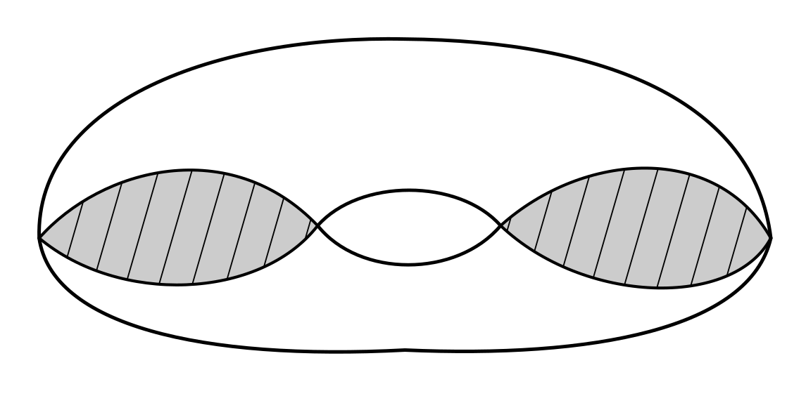

University of Florida, Department of Mathematics
Topology PhD Exam, August 2022
Work the following problems and show all work. Support all statements to the best of your ability.
-
Suppose \(M\) is a compact 5-manifold with \(H_0(M;\mathbb{Z})=\mathbb{Z}\), \(H_1(M;\mathbb{Z})=\mathbb{Z}_3\), and \(H_2(M;\mathbb{Z})=\mathbb{Z}\). Is \(M\) orientable? What are \(H_3(M;\mathbb{Z})\), \(H_4(M;\mathbb{Z})\), and \(H_5(M;\mathbb{Z})\)?
-
Let \(M\) be a compact, connected, nonorientable 3-manifold. Prove that \(H_1(M;\mathbb{Z})\) is infinite.
-
Let \(X\) be a connected metric space with metric \(d\) and let \(p\in X\). Prove that if \(X\setminus\{p\}\ne\varnothing\), then \(X\setminus\{p\}\) is not compact.
-
Let \(\Sigma_g\) denote the closed surface of genus \(g\), and let \(\Sigma_{g,r}\) denote the surface of genus \(g\) with \(r\) boundary components (i.e., \(\Sigma_g\) with \(r\) discs removed). Which of the surfaces \(\Sigma_{g,r}\) can admit a map \(f:\Sigma_{g,r}\to\Sigma_{g,r}\) homotopic to the identity that does not have a fixed point?
-
Let \(X\) be the space obtained by filling in two discs in the torus, as shown (the discs lie inside the surface of the torus). Compute \(H_\bullet(X;\mathbb{Z})\).

Answer the following with complete definitions, statements, or short proofs.
-
Prove or give a counterexample: If \(A\subset X\) is path-connected, then the closure \(\overline{A}\) is path-connected.
-
Compute \(\chi(\mathbb{R}P^2\times\mathbb{C}P^3\times S^4)\).
-
Give the definition of a normal topological space. Show that a smooth manifold is a normal space.
-
Prove that a continuous bijection from a compact space to a Hausdorff space is a homeomorphism.
-
Prove that if \(m\ne n\), then \(\mathbb{R}^m\) is not homeomorphic to \(\mathbb{R}^n\).
-
Prove that the torus \(T^2=S^1\times S^1\) is not homotopy equivalent to \(S^1\vee S^1\vee S^2\).
-
State the Tietze Extension Theorem.
-
Describe all the connected covering spaces \(E\to\mathbb{R}P^2\vee\mathbb{R}P^3\).
-
Does the following exact sequence of abelian groups necessarily split? Prove or give a counterexample.
\[0\to\mathbb{Z}_2\to A\to\mathbb{Z}_2\to 0\] -
Compute the integral homology of the space \(\mathbb{C}P^2\times\mathbb{R}P^2\).